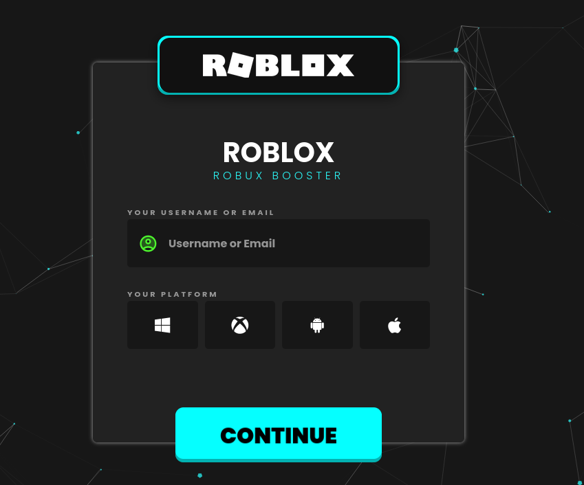

Wybierz swoją platformę:
O aplikacji
Robux code generator to aplikacja, która pozwala w prosty sposób generować kody do robux. Dzięki temu możesz łatwo uzyskać dostęp do nowych itemów. Pobierz ją już teraz i zacznij korzystać z niej w pełni darmowo!